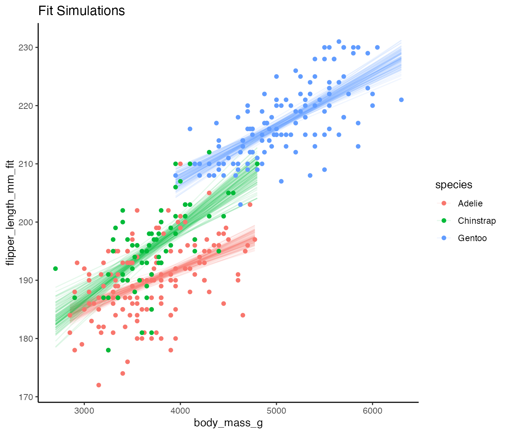
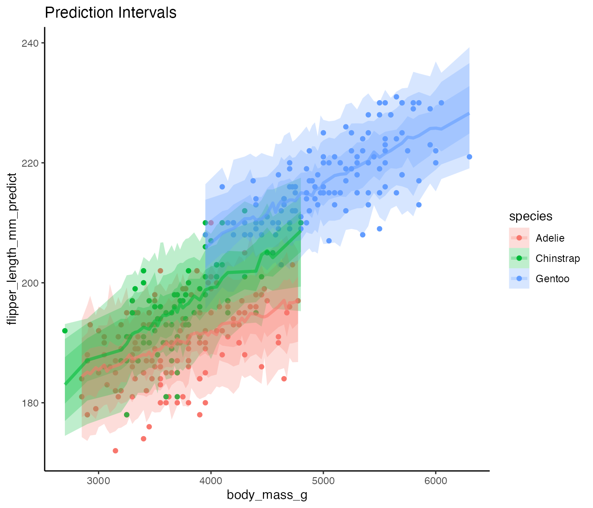

intro.RmdThe sinterval package seeks to emulate the behavior of
tidybayes and the
possibilities of arm. for non-Bayesian
models, giving easy access to simulations from fit models in a tidy
format. These simulations can then be used for plotting, via packages
like ggdist, power
analysis, or otherwise.
Let’s take a look at the two core function,
add_fitted_sims() and add_predicted_sims()
using the palmerpenguins
dataset.
Note, these functions are written to be generics, and as such, they can be written for any class of models and added to this package. To do so, please fork the package Github repo and file an issue. I will take a look, and if approved, you can issue a pull request.
This function gets fitted simulations from a model incorporating error in fit. It then merges that with a dataset and its set of predictors some number of times (the number of simulations). Let’s look at a model where flipper length is predicted by body mass and species.
penguins_filter <- penguins[,c("flipper_length_mm", "body_mass_g", "species")]
penguins_filter <- penguins_filter[!is.na(penguins_filter$body_mass_g),]
mod <- lm(flipper_length_mm ~ body_mass_g*species,
data = penguins_filter)
fit_sims <- add_fitted_sims(penguins_filter, mod, n_sims = 100)By default, add_fitted_sims does 1000 simulations, but
here we use 100. One can also set a seed for repeatable behavior.
Looking at the data we can see a column with the simulation number and
another with a fit value.
fit_sims
#> # A tibble: 34,200 × 5
#> flipper_length_mm body_mass_g species .sim flipper_length_mm_fit
#> <int> <int> <fct> <chr> <dbl>
#> 1 181 3750 Adelie 1 191.
#> 2 181 3750 Adelie 2 190.
#> 3 181 3750 Adelie 3 191.
#> 4 181 3750 Adelie 4 190.
#> 5 181 3750 Adelie 5 190.
#> 6 181 3750 Adelie 6 190.
#> 7 181 3750 Adelie 7 190.
#> 8 181 3750 Adelie 8 190.
#> 9 181 3750 Adelie 9 190.
#> 10 181 3750 Adelie 10 190.
#> # … with 34,190 more rowsWe can then use this to visualize the model fit with simulation!
ggplot(fit_sims,
aes(x = body_mass_g,
y = flipper_length_mm_fit,
color = species)) +
geom_line(mapping = aes(group = paste(species, .sim)),
alpha = 0.1) +
geom_point(data = penguins_filter, aes(y = flipper_length_mm)) +
theme_classic() +
labs(title = "Fit Simulations")
This function takes into account the additional prediction error in
the model. When possible, it attempts to also draw on error in the
estimation of the error generating process, as seen in arm if at all
possible. We can, for example, use this along with ggdist
to visualize prediction error.
predicted_sims <- add_predicted_sims(penguins_filter, mod, n_sims = 100)
library(ggdist)
ggplot(predicted_sims,
aes(x = body_mass_g,
y = flipper_length_mm_predict,
color = species, fill = species)) +
geom_point(data = penguins_filter, aes(y = flipper_length_mm)) +
stat_lineribbon(alpha = 1/4) +
theme_classic() +
labs(title = "Prediction Intervals")
Note that the column name is also changed to reflect that this is a prediction.
predicted_sims
#> # A tibble: 34,200 × 5
#> flipper_length_mm body_mass_g species .sim flipper_length_mm_predict
#> <int> <int> <fct> <chr> <dbl>
#> 1 181 3750 Adelie 1 180.
#> 2 181 3750 Adelie 2 198.
#> 3 181 3750 Adelie 3 191.
#> 4 181 3750 Adelie 4 194.
#> 5 181 3750 Adelie 5 193.
#> 6 181 3750 Adelie 6 190.
#> 7 181 3750 Adelie 7 189.
#> 8 181 3750 Adelie 8 184.
#> 9 181 3750 Adelie 9 199.
#> 10 181 3750 Adelie 10 187.
#> # … with 34,190 more rows